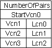

The first defragmentation support for Windows NT was introduced by Executive Software. Their Diskeeper product was initially released for Windows NT 3.51, and because the NTFS and FAT file systems for NT 3.51 have no native functions that provide for cluster movement, Executive Software was forced to purchase a source license for NT and to create and ship custom versions of NTFS and FAT, as well as NT itself, along with their defragmentation code. The divergence of Executive Software's version of NT from Microsoft's version resulted in severe compatibility problems for Diskeeper's users when NT 3.51 Service Pack releases were produced. It was also undoubtedly a support headache for Microsoft, because unsuspecting users would many times not realize that problems they encountered were the result of Diskeeper, and not a Service Pack.
With the development of NT 4.0, Executive Software and Microsoft had a chance to introduce native support for disk defragmentation. According to Executive Software, they requested specific functionality in NTFS and FAT for cluster reallocation, which Microsoft added for them. Just before the release of NT 4.0's retail version, Executive Software made its Diskeeper 2.0 product Beta version available for download from its Web site.
In this page I'm going to document NT 4.0's defragmentation support interfaces and present a Win32 console program, along with its source code, that serves as a demonstration of them in action. The program, called Defrag, will let you manually move clusters around your FAT or NTFS file systems, and could easily be extended to actually become a full-blown defragmenter. You can learn more about NT defragmenting in my Windows NT Magazine NT Internals column, "Inside Windows NT Disk Defragmentation", which is available on-line.
NT 4.0's defragmentation support is based on file system control (FSCTL) commands, which are a form of device I/O control commands that are intended specifically for file systems. FSCTL's provide a file system-dependent interface that can extend the standard file system interface provided by NT's I/O Manager. Four FSCTL's were introduced for defragmentation and are listed below. The names I've assigned them are not necessarily the official Microsoft names, but match the names of the functions that are invoked when they are used.
FSCTL_GET_VOLUME_BITMAP
FSCTL_GET_RETRIEVAL_POINTERS
FSCTL_MOVE_FILE
FSCTL_READ_MFT_RECORD
The first three are implemented on both NTFS and FAT file systems, but the fourth, FSCTL_READ_MFT_RECORD, is only relevant to NTFS. FSCTL_READ_MFT_RECORD makes it possible to very efficiently determine what files are on a NTFS volume and where their clusters are located, but its use requires detailed knowledge of undocumented NTFS on-disk data structures, so I won't cover it. The remaining three FSCTL's are powerful enough that with them, a disk can be defragmented by a program that knows nothing about FAT or NTFS data structures, or that even cares which type of file system is being processed. The rest of this section will cover each in turn, but first I'll document a native Windows NT function, NtFsControlFile, that is used to send FSCTLs to a file system from a Win32 program. Throughout the descriptions of the APIs, the terms virtual cluster number (VCN or Vcn) and logical cluster number (LCN or Lcn) are used. VCNs are clusters within a particular file, and LCNs are clusters on the volume. Thus VCN 0 of a file may map to LCN 2394 of a volume, VCN 1 may map to LCN 104227, and so on.
This function is exported by the Windows NT kernel-mode interface library called NTDLL.DLL. Many Microsoft programs use functions in NTDLL.DLL, including the various operating environment subsystems (Win32, POSIX, OS/2, and WOW), and other programs that ship as part of NT. Here is the definition for the command, Win32 SDK-style:
NTSTATUS NtFsControlFile(
IN HANDLE FileHandle,
IN HANDLE Event, // optional
IN PIO_APC_ROUTINE UserApcRoutine, // optional
IN PVOID UserApcContext, // optional
OUT PIO_STATUS_BLOCK UserIoStatus,
IN ULONG FsControlCode,
IN PVOID InputBuffer, // optional
IN ULONG InputBufferLength, // optional
OUT PVOID OutputBuffer, // optional
IN ULONG OutputBufferLength // optional
);
This is the handle of the file or volume returned by CreateFile that the FSCTRL is directed at. Some FSCTL's are file-specfic, and others are volume specific.
Handle to an event that can be synchronized on if the function returns STATUS_PENDING, indicating that it hasn't completed. Instead of passing in an event handle, callers of NtFsControlFile generally block on the file handle when I/O is pending, since it is also signaled when the operation completes.
This points at a function that, if Event is NULL, will be executed when the operation has finished. Use of the function in this way is atypical.
This data structure is filled with the function's return status. It is where a caller should find the operation's final status in the case that the function originally returned STATUS_PENDING and the caller had wait for the it to complete.
A pointer to the caller-allocated FSCTL input parameter, if it expects one.
The length in bytes of the variable or data structure passed as an input.
Points to buffer that will receive the FSCTL's output data, if it provides any.
The length in bytes of the variable or data structure to receive output data.
This function is used by several Win32 functions, including DeviceIoControl. The easiest way to use it is to not pass an event handle or an Apc routine, but instead to wait for STATUS_PENDING operations to complete by blocking on the file handle. See defrag.c in the demonstration program for examples of its use.
This is generally the first FSCTL that is used by a defragmenter, because it is required to get a map of the clusters that are free and in use on a volume. Each bit in the bitmap returned in the output buffer represents one custer, where a 1 signifies an allocated cluster and a 0 signifies a free cluster.
The file handle passed to this call must represent a volume opened with the GENERIC_READ flag. A volume can be opened with a name of the form, "\\.\X:", where 'X' is the volume's drive letter.
The input buffer must point to a ULONGLONG value that specifies the 8-cluster aligned starting cluster that the first bit in the returned bitmap buffer will correspond to. If the value is not 8-cluster aligned, the bitmap data returned will begin at the 8-cluster aligned value just below the one passed. InputBufferLength must be the size of a ULONGLONG in bytes, which is 8.
Points at a BITMAP_DESCRIPTOR data structure, which is defined as follows:
typedef struct {
ULONGLONG StartLcn;
ULONGLONG ClustersToEndOfVol;
BYTE Map[1];
} BITMAP_DESCRIPTOR, *PBITMAP_DESCRIPTOR;
StartLcn is filled in with the cluster number corresponding to the first bit in the bitmap data. ClustersToEndOfVol represents the number of clusters on the volume minus the StartLcn cluster. Map is the cluster bitmap data. The length of the bitmap data is the difference between OutputBufferLength and 2 * sizeof(ULONGLONG).
If there are errors related to the volume's support for this FSCTL or FileHandle representing a valid volume handle, an appropriate native NT error code is returned (as defined in the NT DDK file NTSTATUS.H). If the cluster specified in InputBuffer is out of range for the volume, the call will return STATUS_INVALID_PARAMETER. If there are no errors and there are no clusters beyond the last one described in the Map array, the FSCTL returns STATUS_SUCCESS. Otherwise STATUS_BUFFER_OVERFLOW is returned to notify the caller that further calls should be made to retrieve subsequent mappings.
This function returns the cluster map for a specified file. The cluster map indicates where particular clusters belonging to the file reside on a volume.
This is a file handle returned by a CreateFile call that opened the target file.
The ULONGLONG starting cluster within the file at which the mapping information returned will commence. InputBufferLength must be 8.
Points at a GET_RETRIEVAL_DESCRIPTOR data structure:
typedef struct {
ULONG NumberOfPairs;
ULONGLONG StartVcn;
MAPPING_PAIR Pair[1];
} GET_RETRIEVAL_DESCRIPTOR, *PGET_RETRIEVAL_DESCRIPTOR;
The number of mapping pairs returns in the Pair array is placed in NumberOfPairs. StartVcn indicates the first cluster within the file that is mapped by the Pair array. The Pair array is a list of MAPPING_PAIR entries:
typedef struct {
ULONGLONG Vcn;
ULONGLONG Lcn;
} MAPPING_PAIR, *PMAPPING_PAIR;
Each entry is made up of a virtual cluster offset, and a logical cluster on the volume. The interpretation of the array is as follows: the first Lcn in the Pairs array corresponds to the StartVcn of the GET_RETRIEVAL_DESCRIPTOR data structure. The length of the file segment that starts at that cluster can be calculated by subtracting the GET_RETRIEVAL_DESCRIPTOR StartVcn from the Vcn of the first entry in the Pairs array. The second segment of the file starts at the Vcn of the second entry in the Pairs array, with a corresponding Lcn described by the Lcn of the first entry. Its length is the difference between the Vcns of the first and second entries. These relationships are shown more clearly in the figure below.
On NTFS volumes, compressed files contain 0-filled clusters that have no correspondence to Lcns on the volume. These clusters are described with Lcns in the Pairs array equal to (ULONGLONG) -1.
The maximum number of entries that can be returned in the Pairs array is equal to (OutputBufferLength - 2 * sizeof(ULONGLONG))/ (2 * sizeof(ULONGLONG)).
If there are errors related to the volume's support for this FSCTL or FileHandle representing a valid volume handle, an appropriate native NT error code is returned (as defined in the NT DDK file NTSTATUS.H). If the cluster specified in InputBuffer is out of range for the volume, the call will return STATUS_INVALID_PARAMETER. If there are no errors and there are no clusters beyond the last one described in the Map array, the FSCTL returns STATUS_SUCCESS. Otherwise STATUS_BUFFER_OVERFLOW is returned to notify the caller that further calls should be made to retrieve subsequent mappings.
This is the core of the defragmentation support. It is used to move the clusters of a particular file to a currently unallocated position on the volume.
The file handle passed to this call must represent a volume opened with the GENERIC_READ flag. A volume can be opened with a name of the form, "\\.\X:", where 'X' is the volume's drive letter.
A pointer to a MOVEFILE_DESCRIPTOR:
typedef struct {
HANDLE FileHandle;
ULONG Reserved;
LARGE_INTEGER StartVcn;
LARGE_INTEGER TargetLcn;
ULONG NumVcns;
ULONG Reserved1;
} MOVEFILE_DESCRIPTOR, *PMOVEFILE_DESCRIPTOR;
FileHandle is a handle to a file previously opened by CreateFile, and represents the file that is the subject of the move operation. StartVcn is the start of the segment within the file that will be moved. TargetVcn is the Lcn on the volume to which the files clusters will be moved, and NumVcns are the number of clusters making up the segment that will be moved.
NTFS Caveats: The NTFS implementation of this command uses some of the logic present in NTFS that supports the reallocation of data within compressed files. The NTFS compression algorithm divides compressed files into 16-cluster segments, so the MoveFile functionality on NTFS suffers a similar restriction. When the clusters of an uncompressed file are moved, StartVcn must be 16-cluster aligned, or MoveFile will adjust it to the next lowest 16-cluster boundary. Similarly, NumVcns must be a multiple of 16 or MoveFile will round it up to the next multiple of 16. If the clusters of a compressed file are being moved, the rules are little more complex: StartVcn can specify the beginning of any non 0-filled segment of the file that immediately follows a 0-filled segment, and NumVcns must specify a run of clusters within the file that precisely encompasses non 0-filled segments of the file. The same type of rounding described for movement of non-compressed files will be performed if the rules are not followed.
This function does not return any data, so this parameter should be NULL.
If either the volume file handle or the file's handle are invalid an appropriate error code is returned. If StartVcn is out of range for the file or TargetLcn is out of range for the volume, STATUS_INVALID_PARAMETER is returned.
If the move is directed at a FAT volume, the only way to tell if the move was successful is to re-examine the file's mapping using FSCTL_GET_RETRIEVAL_POINTERS, since the call will always return STATUS_SUCCESS.
If the move is directed at an NTFS volume, the function will return STATUS_SUCCESS if it was successful. Otherwise it will return STATUS_ALREADY_COMMITTED to indicate that some range of the target clusters are already in use. In some cases, attempting to move clusters to an area that is marked as unallocated in an NTFS volume bitmap as free will result an unexpected STATUS_INVALID_PARAMETER. This is due to the fact that NTFS reserves ranges of clusters for the expansion of its own metadata files, which the cluster reallocation code will not attempt to use.
FSCTL_MOVE_FILE does not work on volumes with cluster sizes larger than 4KB. The error returned when moves are attempted on such volumes is STATUS_INVALID_DEVICE_REQUEST. This limitation, which is tied to its implementor's mistaken belief that FSCTL_MOVE_FILE must suffer the same limitations as NTFS compression, is relatively serious because FORMAT uses cluster sizes larger than 4KB on volumes larger than 4GB.
Another thing to be aware of when moving clusters on a NTFS volume is that clusters that have been freed by a MoveFile operation will not be available for reallocation themselves until the volume has been checkpointed and if the volume has not been checkpointed, the function will return STATUS_ALREADY_COMMITTED. NTFS checkpoints volumes every few seconds so the only remedy is to wait and try again.
Note that because a file handle for the file to be moved must be passed to FSCTL_MOVE_FILE, it is not possible to move the clusters of files that have been opened by another process for exclusive access. Since the system opens paging files, the Registry, and NTFS metadata files for exclusive access, they cannot be defragmented. Also, because of the way the FSCTL_MOVE_FILE routine is written, it is only possible to reallocate file data clusters, and not directories or other file metadata.
Defrag is a Win32 console program that demonstrates the use of all three presented FSCTL's, and provides an interactive user-interface that can be used to move clusters around FAT and NTFS volumes. Note that the FSCTLs are implemented such that you CANNOT corrupt data on your drive by using them. Start Defrag by typing 'defrag X', where 'X' is the drive letter of the volume that you want to experiment with.
Once running, Defrag takes 3 commands which correspond to the FSCTLs, and 'q', which quits the program. Here is the syntax for the commands:
b [StartLcn]
n <PathName>
m <PathName> <StartVcn> <TargetLcn> <NumVcns>
The 'b' command dumps a description of the unallocated clusters of the volume starting with the optional StartLcn argument. If StartLcn is not specified the dump starts at Lcn 0.
The 'n' command dumps the cluster map for the specified file. Path names do not require a drive letter or a leading '\', although Defrag will accept such specifications.
Finally, the 'm' command is used to move clusters of a particular file. Target clusters should be chosen from the list returned by the 'b' command. Verify that entered move commands actually result in cluster relocation by re-dumping the cluster map of the adjusted file.